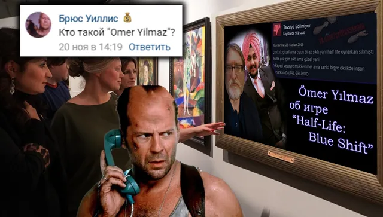
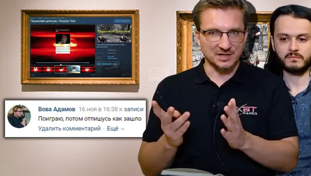

Ваши комментарии
ВКонтакте
✅Вот и еще одна неделя подходит к своему завершению, данные семь световых суток …
22 ноября 2020 · №755 в выгрузке стены · оригинал во ВКонтакте ↗



#ВашиКомментарии@criticssteam #19
✅Вот и еще одна неделя подходит к своему завершению, данные семь световых суток были очень продуктивны, а следующие побьют её рекорд!
🧩Мы проиллюстрировали ваши лучшие комментарии, выпуск получился одним из самых насыщенных в мировой истории;
🤴А титул комментатора, о котором вы можете более подробно прочесть [https://vk.com/@criticssteam-sistema-titulov|здесь], получают:
🌟[id347679904|Андрей Язин]
⭐[id191917835|Глеб Иванов]
🌟[id119602395|Вова Адамов]
⭐[id284440935|Никита Лагуткин]
⭐[id491132613|Брюс Уиллис]
=======================
Всем большое спасибо, увидемся уже через час!
✅Вот и еще одна неделя подходит к своему завершению, данные семь световых суток были очень продуктивны, а следующие побьют её рекорд!
🧩Мы проиллюстрировали ваши лучшие комментарии, выпуск получился одним из самых насыщенных в мировой истории;
🤴А титул комментатора, о котором вы можете более подробно прочесть [https://vk.com/@criticssteam-sistema-titulov|здесь], получают:
🌟[id347679904|Андрей Язин]
⭐[id191917835|Глеб Иванов]
🌟[id119602395|Вова Адамов]
⭐[id284440935|Никита Лагуткин]
⭐[id491132613|Брюс Уиллис]
=======================
Всем большое спасибо, увидемся уже через час!